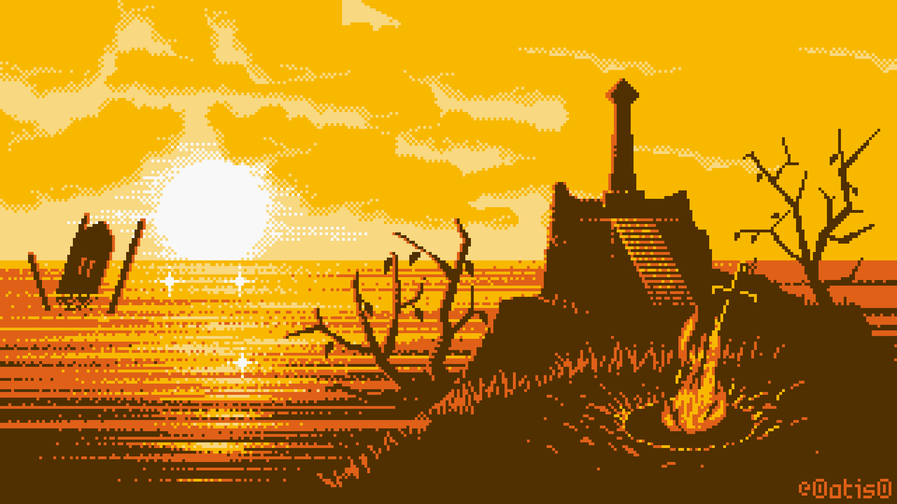

Dark Souls es un juego de rol de acción de 2011 desarrollado por FromSoftware y publicado por Bandai Namco Entertainment.
El objetivo del juego es ir eliminando a los enemigos y jefes finales que se interpongan en tu camino. Para ello existen hogueras, las cuales sirven de punto de control para el jugador, además de varias funciones más (restablecen la salud, los hechizos, el estado general, los Frascos de Estus que recuperan la salud, y sirven para subir de nivel y como un descanso para el jugador, ya que este juego no tiene pausa). Sin embargo, es importante tener en cuenta que una vez que se descansa en la hoguera, los enemigos eliminados por el jugador reaparecerán, excepto los jefes finales o PNJs asesinados. Muy de vez en cuando el jugador se cruza con diversos PNJs que le serán extremadamente útiles, y en muchos casos fundamentales, para avanzar en el juego. Esto es importante ya que atacar a un PNJ lo volverá hostil por lo que resta del juego, y una vez que se mata un PNJ, este no vuelve a aparecer. Las almas son una especie de puntos de experiencia que se obtienen al eliminar enemigos y utilizar ciertos objetos, y sirven como "créditos" para comprar objetos y para subir de nivel
Esta saga es una creación de Hidetaka Miyazaki en el año 2011 y está considerada como una heredera espiritual de la saga Demon Souls del mismo autor. Sus principales características se centran en la gran dificultad de los combates, la exploración de entornos interconectados entre sí y una perspectiva en primera persona. Estas características que le han llevado a "crear" su propio subgénero tipo Souls, con el que la propia From Software ha creado otros juegos como Bloodborne e inspirando a otras desarrolladoras a crear sagas como Nioh. En esta página encontrarás el listado completo con todos los juegos de